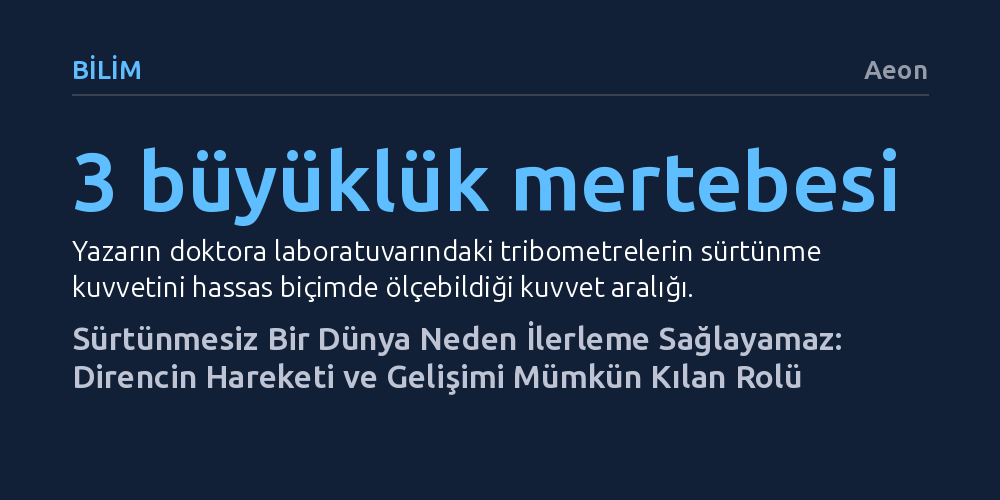

BILIM · Aeon · 2026-10-24
Modern dünyanın aksine sürtünme kurtulunması gereken bir kusur değil, tekerleğin dönmesinden karanlık maddenin tespitine kadar tüm ilerlemenin temel şartıdır. Direncin tamamen yok edildiği bir sistem hareket üretemez; yalnızca olduğu yerde boşa döner.
Direnç ve pürüzleri hayatı zorlaştıran birer engel olarak görmek yerine, her türlü dengenin, hareketin ve teknolojik sıçramanın zorunlu koşulu olarak anlamayı sağlar.

Günlük hayatımızda iş akışlarından market alışverişine kadar hemen her alanda 'sürtünmesiz' bir düzen kurma vaadiyle karşılaşıyoruz. Yaygın kanı, direncin hareketi kısıtlayan, enerjiyi boşa harcayan ve mutlaka ortadan kaldırılması gereken bir kusur olduğu yönündedir. Ancak bu bakış açısı, varlığımızı mümkün kılan temel bir fiziksel gerçeği gözden kaçırır. Sürtünme olmasaydı ayaklarımız yere tutunamaz, hiçbir nesneyi elimizde tutamaz ve Dünya'nın tektonik plakalarının sürekli kaymasını engelleyemezdik. İki yüzey temas ettiğinde ortaya çıkan direnç, harekete karşı koyarken aslında hareketin var olmasını sağlar.
Bu paradoksu bilimsel olarak ele alan disipline triboloji adı verilir. 1960'lı yıllarda bağımsız bir uzmanlık alanı olarak kabul edilen triboloji; temas halindeki yüzeylerin sürtünmesini, aşınmasını ve yağlanmasını inceler. Tribologlar bir yandan jet motorlarındaki sürtünmeyi düşürerek yakıt tasarrufu sağlamaya çalışırken, diğer yandan dişlerdeki plağı temizlemek gibi durumlarda sürtünmeyi bilinçli olarak artırmanın yollarını arar. Sürtünmeyi yalnızca aşılması gereken bir pürüz olarak değil, doğanın temel bir mekanizması olarak görmek, insanın teknoloji tarihini de yeniden yorumlamamıza kapı aralar.
İnsanlığın en kritik icatlarından biri olan tekerlek, sürtünmeyi sıfırladığı için değil, kayma sürtünmesini çok daha verimli olan yuvarlanma sürtünmesine dönüştürdüğü için başarılı olmuştur. Ağır yükleri yerde sürüklemek yerine kütükler üzerinde kaydırmak yüzey temasını belirgin biçimde azaltır. Ne var ki tekerleğin işe yaraması için de sürtünmeye ihtiyaç vardır. Zemin ile tekerlek arasındaki statik sürtünme bulunmasaydı, tekerlek buz üzerinde patinaj yapan bir araç gibi boşa döner ve hiçbir ilerleme sağlanamazdı. İlerleme başladıktan sonra ise hareketi kontrol altında tutan dinamik sürtünme devreye girer.
Tarih boyunca mühendisler sürtünmeyi yok etmek yerine onunla uzlaşmanın yollarını aramıştır. Örneğin Antik Roma hipodromlarındaki savaş arabalarında, tekerlek milleri ile dingil arasındaki şiddetli sürtünme aşırı ısı üretiyor ve şair Horace'ın dizelerinde anlattığı gibi tekerleklerin akkor halinde parlamasına yol açıyordu. Romalılar, tekerlek ile dingil arasına hayvan yağı sürerek yağlama bilgisini pratiğe döktüler. Yağın ısınıp alev alma tehlikesine karşı ise modern yarışlardaki pit-stop benzeri bir yöntemle tekerleklere su dökerek soğutma sağladılar.
Benzer bir akıl yürütme Vikinglerin denizcilik stratejilerinde de görülür. Bir akışkanın içinden geçen gövde iki türlü dirençle karşılaşır: suyun yüzeye sürtünmesi ve gövdenin biçiminden kaynaklanan form direnci. Vikingler yük taşırken geniş gövdeli gemiler kullanarak form direncini artırmayı ve yavaşlamayı göze aldılar; çünkü dalgalara karşı denge onlar için daha kritikti. Savaş için tasarladıkları ünlü uzun gemilerde ise gövdeyi daraltarak direnci asgariye indirdiler. Kalasları perçinlerle üst üste bindirdikleri 'klinker' tekniği sürtünmeyi biraz artırsa da gemiye fırtınalarda esneme ve kırılmadan dalgaları aşma kabiliyeti kazandırıyordu.
20. yüzyıl, sürtünmenin ölçülüp kontrol altına alındığı ve mühendislik titizliğiyle aşıldığı bir dönemdi. Chrysler mühendislerinin 1920'lerde Orville Wright ile görüşerek otomobillere aerodinamik biçim kazandırma çabası, araç tasarımında rüzgâr tüneli testlerini kalıcı bir endüstriyel standarda dönüştürdü. Ancak 21. yüzyıl tribolojisi çok daha heyecan verici bir eşiğe işaret ediyor: Direnci yalnızca yenilmesi gereken bir engel olarak görmek yerine, onu yeni bir ilerleme aracına dönüştürmek.
Bu dönüşümün en açık kanıtı elektrikli ve hibrit araçlardaki rejeneratif frenleme teknolojisidir. Geleneksel taşıtlarda sürtünme balatalarda sadece boşa giden bir ısıya dönüşürken, modern mühendislik bu direnci elektrik enerjisine çevirerek bataryayı doldurur. Mühendisler sürtünmeyi ortadan kaldırmaya saplanıp kalmak yerine, bu kuvvetin açığa çıkardığı enerjiyi sürdürülebilirliğin bir parçası haline getirmiştir.
Sürtünmenin bir kontrol aracına dönüştürülmesi biyolojide de hayati rol oynar. Örneğin bir virüsün kendi protein kılıfından genetik materyalini dışarı fırlatma hızı, hedef hücrede aktif bir enfeksiyon mu başlatacağını yoksa uykuda mı kalacağını doğrudan belirler. 2023 yılında yapılan araştırmalar, virüs DNA'sının sarmal paketlenme biçimi değiştirilerek fırlatma sırasındaki sürtünmenin artırılabileceğini ve bu sayede sürecin yavaşlatılabileceğini kanıtladı. Sürtünmeyi mikro ölçekte ayarlayabilmek, virüslerin zararlı bakterilere karşı hedefe yönelik birer tedavi aracı olarak kullanılabilmesinin önünü açmaktadır.
Sürtünme yalnızca doğrudan temas eden katı yüzeyler ya da akışkan maddelerle sınırlı değildir; uzayın derinliklerinde kütleçekimsel kuvvetler aracılığıyla da işler. 1930'lu yıllarda astrofizikçi Subrahmanyan Chandrasekhar, yıldızların çarpışma olasılıklarını incelerken klasik hesapların gözlemlerle uyuşmadığını fark etti. Chandrasekhar, uzayda hareket eden devasa gök cisimlerinin çevrelerindeki kütlelerle girdikleri kütleçekimsel etkileşimler sonucunda arkalarında bir çekim alanı bırakarak yavaşladığını keşfetti ve bu kavrama 'dinamik sürtünme' adını verdi.
Bu kuramsal keşif, günümüzde modern astrofiziğin en büyük sırlarından birini aydınlatmak için kullanılmaktadır. 2024 yılında Hong Konglu araştırmacılar, kara deliklerin çevresinde dönen bazı yıldızların gözlemlenen yörünge sürelerindeki tutarsızlıkları çözmek için Chandrasekhar'ın dinamik sürtünme formüllerini uyguladılar. Yıldızların hareketine kara deliği çevreleyen karanlık maddenin uyguladığı sürtünme etkisi dahil edildiğinde, hesaplanan süreler ile gerçek ölçümler kusursuz biçimde örtüştü. Sürtünme, evrenin görünmeyen temel bileşeni olan karanlık maddenin varlığını teyit eden güçlü bir kanıta dönüştü.
Tribolojinin teknoloji tarihine tuttuğu ayna, ilerlemenin doğasına dair derin bir felsefi ders barındırır. Yazarın vurguladığı gibi, 'direnç ilerlemenin bir sonucudur ve varlığı gelişimin bizzat işaretidir.' İnsanlık atmosferde uçmayı başarmasaydı gaz türbinli jet motorlarına, bu motorları geliştirmeseydi aşırı sıcaklıklara dayanıklı katı yağlayıcılara ihtiyaç duymayacaktı. Karşılaştığımız her yeni direnç, daha önce var olmadığımız yeni bir yetkinlik alanına adım attığımızı müjdeler.
Sürtünmesiz bir dünya ideali insanlara zahmetsiz bir kolaylık vadeder; fakat dirençten arındırılmış bir kolaylık, patinaj yapan bir tekerlek gibi ilerleme getirmeyen kısır bir dönmeden ibarettir. Gerçek ilerleme, dirençten kaçarak değil; onunla yüzleşip onu ölçerek ve nihayetinde bizi ileriye taşıyacak bir kaldıraca dönüştürerek mümkün olur.